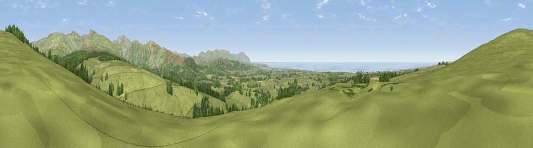

Viewpoint near Gosforth
#2119 in England · top 23% of its area beats it · near GosforthThe view, rendered

A 360° render of this exact spot computed from the terrain model, tree cover and land cover — summer colours, afternoon light, calibrated against photographs of famous viewpoints. Real trees, hedges and buildings will differ in detail.
The panorama
Grey silhouette: terrain skyline in each direction (720 bearings, Earth curvature and refraction included). Dashed green: skyline with trees (+15 m) and buildings (+8 m) as obstacles. Blue strip: how far the ground is visible on each bearing.
Where the view opens
Wedge length = distance to the farthest visible ground on that bearing (vegetation-aware). Rings at 10, 25 and 50 km.
What fills the view
77% grassland · 14% woodland · 6% water · 2% cropland
Angular shares of the visible panorama (visual magnitude), not map area. Landscape diversity 0.33 (0–1 Shannon).
Key numbers
More beautiful places nearby
The staircase of upgrades: each row has a higher view potential than everything closer. Driving times are estimates from straight-line distance, calibrated against real road routing — check an actual route before setting out.
| Place | Direction | Drive | Score |
|---|---|---|---|
| Viewpoint near Gosforth | N · 2 km | ~4 min | 83.0 |
| Whin Rigg | E · 7 km | ~15 min | 87.5 |
| Viewpoint near Boot | E · 8 km | ~17 min | 88.9 |
| Crag Fell | N · 10 km | ~19 min | 89.1 |
| Long Side | NE · 29 km | ~46 min | 89.5 |
| Viewpoint near Finsthwaite | ESE · 35 km | ~53 min | 90.3 |
| The Knoll | S · 419 km | ~397 min | 91.0 |
54.43181, -3.42245 · source: screening · position refined by local search. Computed location — check access rights before visiting.